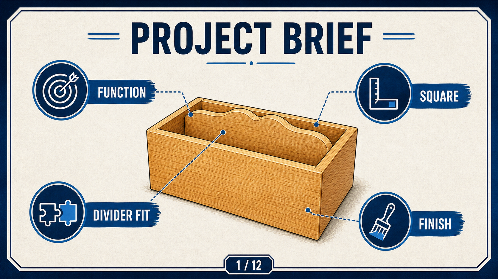

Your work
Student details
Your entries save automatically in this browser. Use Download evidence PDF before leaving the page.
Weeks 1-2
This module
Build your safety-first production culture first: correct setup, accurate marking and evidence planning before cutting.
Theory 1
Understand the Small Box project brief

The small box project outcome is a functioning timber box with a snug divider and safe, accurate workmanship. The project brief and assessment expectations are the source of what you are required to do, including the quality checks, safety requirements and evidence expectations.
Do not treat this as a decorative build only. Every measurement and assembly decision should link back to the stated brief and to what the evidence section expects. In this course, evidence is not optional decoration: it is proof that you planned, checked and reflected at the right points.
Good project planning in this unit includes:
- Identifying the required sequence before tool setup.
- Recording risk controls before each higher-risk action.
- Checking your plan against the class assessment requirements.
- Storing evidence in a way that can be reviewed clearly.
Theory 2
Accurate measurement and marking control

Accurate marking is the difference between a controlled process and rework. A clean mark is created by choosing reliable reference lines, checking twice, and keeping your layout tools in good condition.
The sequence is simple and should be non-negotiable:
- Observe and confirm the target dimension from the source.
- Mark clearly with a sharp marking knife or pencil.
- Confirm placement with a second person or a teacher check.
- Only then cut with the work fixed securely.
If a mark is unclear, erase only with approval and re-mark. Do not force an uncertain measurement into the process.
Theory 3
Workshop safety and hazard control hierarchy

Safety starts before the tool switch is turned on. In this unit the risk controls matter as much as the woodworking quality. Your priority is eliminating risk where possible, then substituting or engineering controls, then administrative controls, with PPE as a final layer.
Before each cutting task, check workspace, clamps, blade/bit condition, lighting and student readiness. If the setup is unclear, stop and request teacher approval before continuing.
- Tie back long hair and remove loose items.
- Secure timber before cutting.
- Use the approved process for your machine and tool in use.
- Record control checks as part of your evidence, not just outcomes.
Guided practice
Weeks 1-2 knowledge checks
Check your understanding and use hints and feedback to improve your next action.
Apply your learning
Scaffolded written responses
Write first, then compare your response with the appropriate response example.
Finish the two-week block
Save your evidence
Your work saves in this browser, but browser storage is not the official submission. Download this module PDF before changing devices or clearing browser data.
No marks, answers or personal details are sent from this webpage.